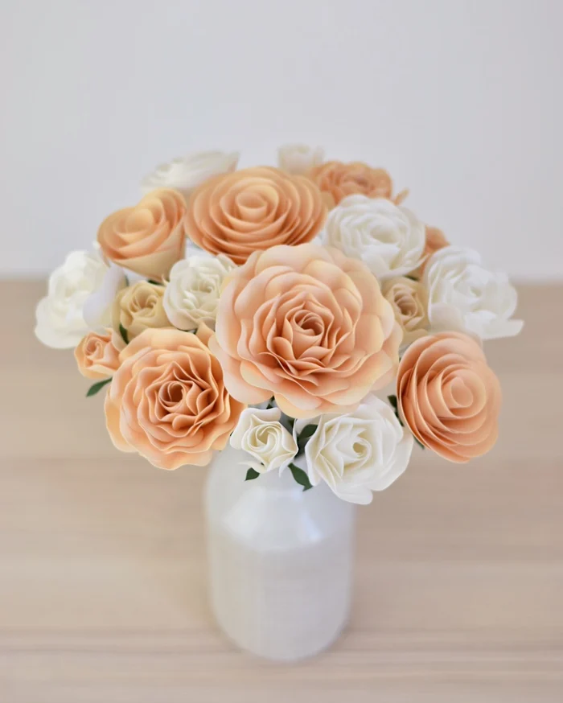
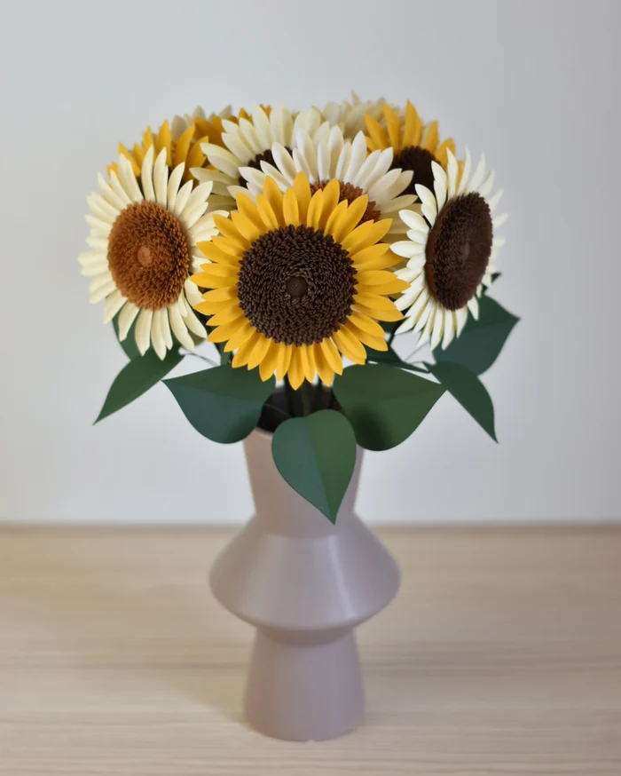
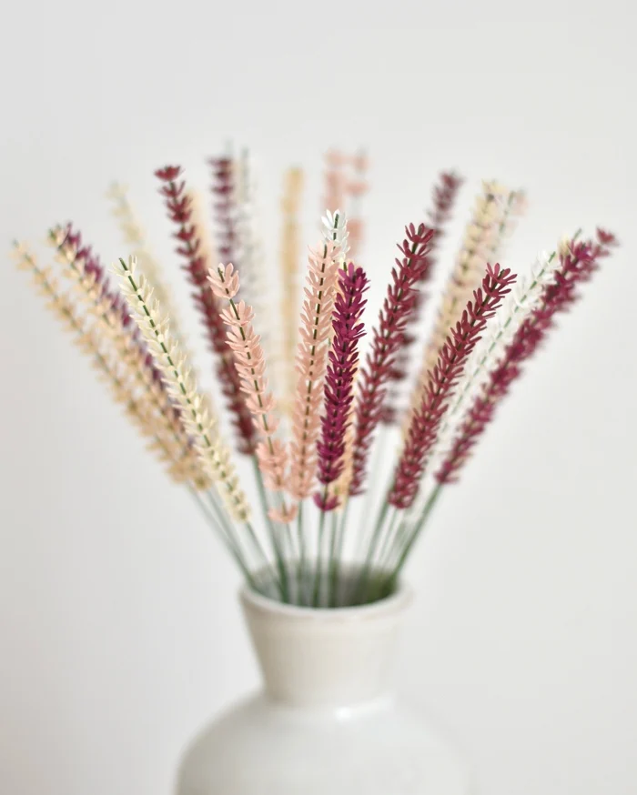
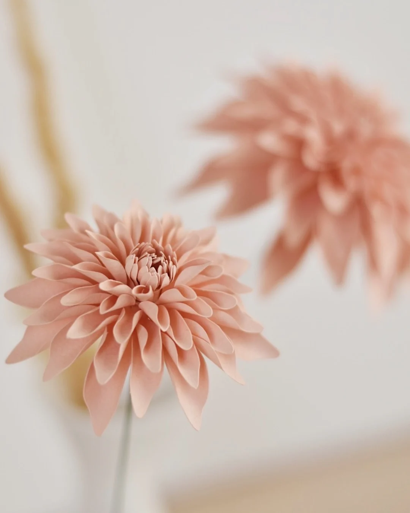
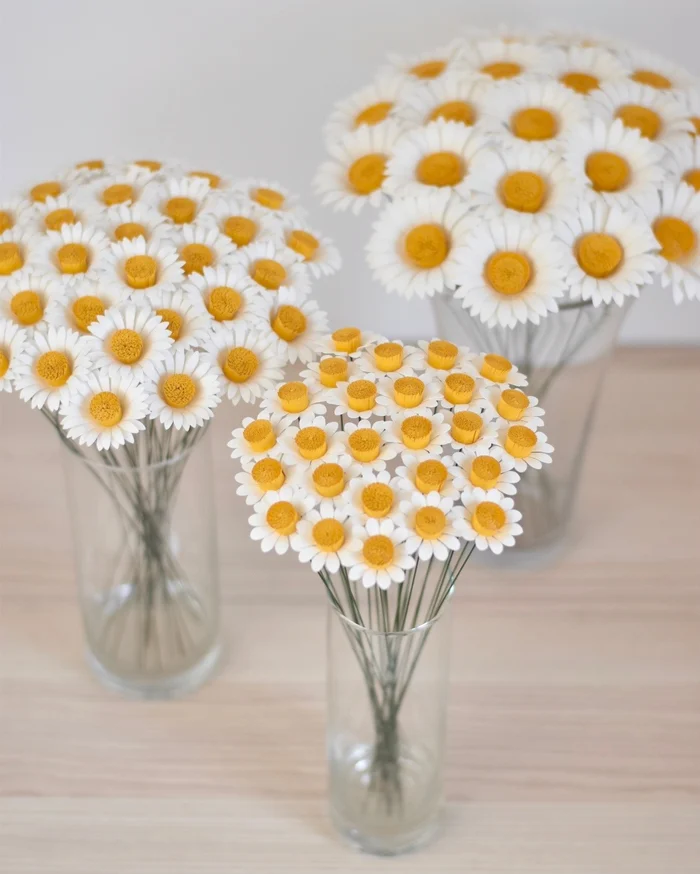
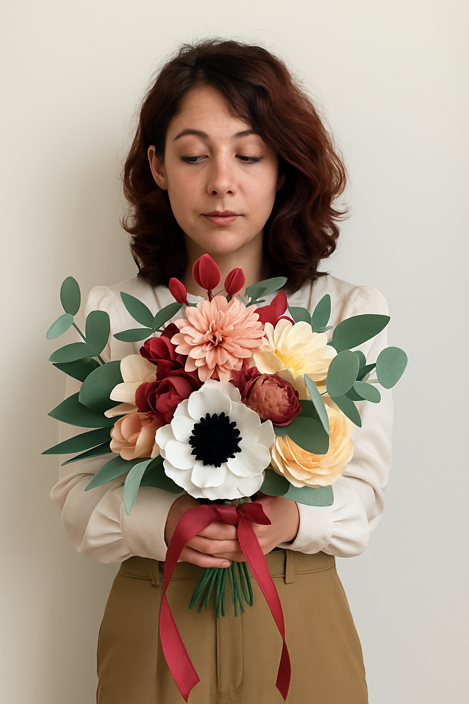

"Bellezza che sboccia e dura nel tempo."






Chi c'è dietro a Volta la Carta?
Volta la Carta è il mio sogno, nato piano, come i fiori che creo: con dolcezza, con cura, con il desiderio di trasformare la carta in emozione. Amo pensare che ogni petalo che nasce tra le mie mani sia un gesto d’amore, un ricordo che non appassisce , una poesia che si può toccare. In ogni creazione metto la mia anima, perché credo nella bellezza delle cose fatte con il cuore. Nel mio laboratorio a Perugia, la carta prende vita, si fa fiore, e racconta storie silenziose ma piene di significato. Volta la Carta è la mia storia, fiorita su carta. Un dono per chi sa ancora meravigliarsi, per chi cerca qualcosa che resti, che parli d’amore, senza bisogno di parole.
